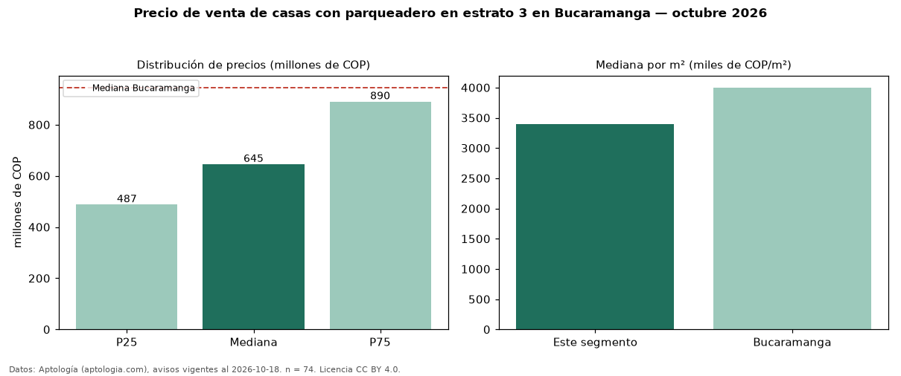

Precio de venta de casas con parqueadero en estrato 3 en Bucaramanga — octubre 2026
En Bucaramanga, la mediana de precio de venta de casas con parqueadero en estrato 3 es COP 645 millones, según 74 avisos vigentes. Eso es 17 % más que la mediana de las casas en estrato 3 en venta de Bucaramanga (COP 550 millones, n = 141); este segmento reúne el 52 % de esos avisos. Por metro cuadrado, la mediana es COP 3,39 millones/m² (n = 72), 5 % por encima de las casas en estrato 3 en venta de Bucaramanga (COP 3,23 millones/m²). El área mediana anunciada es 180 m². El segmento con más oferta es el de 3 o más habitaciones (72 avisos, mediana COP 650 millones). La administración mediana declarada es COP 250.000 al mes (n = 15). La mitad central de los avisos va de COP 487 millones a COP 890 millones (razón 1,8), una dispersión moderada. La mediana de todas las casas en venta de Bucaramanga es COP 945 millones (−32 % de diferencia). Datos: Aptología (aptologia.com), CC BY 4.0 — https://www.aptologia.com/venta/bucaramanga. Archivos: PDF, CSV con las cifras y gráfica PNG.

| Avisos únicos | 74 |
|---|---|
| Percentil 25 | COP 487.315.000 |
| Mediana | COP 645.000.000 |
| Percentil 75 | COP 890.000.000 |
| Mediana por m² | COP 3.389.655 |
Fuente: avisos vigentes de portales inmobiliarios recopilados por Aptología, deduplicados (mínimo 30 avisos únicos por celda). Precios pedidos, no cerrados. Fecha: 2026-10-18.